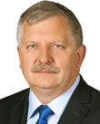

2026-05-27
Projekt wpłynął do Sejmu Druk nr 2705 ↗
w-komisjiustawaPraca w komisjach po I czytaniu (2026-11-17)Sejm 10/2705
| Proces | Sejm kadencja 10, nr 2705 |
|---|---|
| Wpłynął | 2026-05-27 |
| Ostatnia zmiana źródła | 2026-11-18 |
| Źródło | api.sejm.gov.pl ↗ |
221 zdarzeń
| Klub | Za | Przeciw | Wstrz. | Nieobec. |
|---|---|---|---|---|
| KO | 0 | 152 | 0 | 3 |
| P. Adamowicz U. Augustyn S. Bielawska P. Bliźniuk M. Bochenek K. Bojarski P. Borys M. Bosacki M. Chmielewski A. Chybicka J. Cichoń Z. Czernow B. Dolniak A. Domański R. Dowhan M. Filiks J. Frydrych K. Frysztak P. Gabriel K. Gadowski A. Gajewska K. Gajewska E. Gapińska Z. Gawlik E. Gelert A. Gierada R. Giertych W. Giziński M. Golbik S. Gorczyca K. Grabczuk J. Grabiec M. Gromadzka B. Grygorcewicz M. Gzik T. Głogowski P. Głowski K. Habura A. Hanajczyk I. Hartwich M. Hok Ł. Horbatowski K. Jachira R. Jagła M. Janyska M. Jaros P. Jaskulski D. Jazłowiecka D. Jaśkowiec P. Kandyba J. Karnowski I. Karolewska K. Kierzek-Koperska J. Kluzik-Rostkowska Z. Konwiński T. Kostuś U. Koszutska A. Kot P. Kowal I. Kozłowska E. Kołodziej M. Kołodziejczak M. Kołodziejczak M. Koźlakiewicz I. Krawczyk M. Krawczyk R. Kropiwnicki A. Krzemiński H. Krzywonos-Strycharska M. Krząkała K. Królak P. Lachowicz S. Lamczyk M. Lasek G. Lenartowicz I. Leszczyna B. Lisowska K. Lubnauer A. Marchewka D. Marek P. Masełko K. Matusik-Lipiec J. Meysztowicz K. Mieszkowski C. Mroczek A. Myrcha G. Napieralski D. Niedziela J. Niedźwiedzki M. Niemczyk J. Niezgodzka S. Nitras B. Nowacka T. Nowak M. Okła-Drewnowicz P. Olszewski K. Osos P. Papke K. Pawliczak K. Piekarska L. Pietrzczyk K. Piątkowski K. Plocke E. Polak A. Pomaska M. Popielarz M. Pępek R. Rak M. Roguska M. Rosa J. Rutnicki M. Rząsa K. Sibińska R. Siemaszko T. Siemoniak K. Skowrońska W. Smarduch A. Sobolak M. Sowa K. Stachowicz F. Sterczewski P. Suski A. Szewiński H. Szopiński K. Szumilas T. Szymański A. Szłapka W. Sługocki A. Tajner C. Tomczyk M. Tomczykiewicz M. Tracz K. Truskolaski D. Tusk J. Urbaniak A. Uznańska-Wiśniewska R. Wardzała J. Wałęsa M. Wielichowska A. Witczak M. Witczak P. Witek A. Wojciechowska B. Wołoszański M. Wróbel B. Zawieja W. Zembaczyński U. Zielińska A. Łepkowska-Gołaś D. Łoboda M. Łośko A. Łuczak K. Łuczak A. Łącki Ł. Ściebiorowski | ||||
| PiS | 140 | 1 | 0 | 6 |
| A. Adamczyk W. Andzel D. Arciszewska-Mielewczyk I. Arent M. Ast P. Babinetz B. Bartuś R. Bochenek J. Bogucki J. Borowiak K. Bortniczuk B. Borys-Szopa L. Burzyńska M. Błaszczak A. Chojecki K. Choma D. Chorosińska T. Chrzan K. Ciecióra K. Czarnecki W. Czarnecki P. Czarnek A. Czartoryski L. Czechak A. Czerwińska K. Czochara W. Dajczak Z. Dolata B. Dorywalski P. Drabek J. Dziedziczak A. Dąbrowska-Banaszek M. Filipek-Sobczak R. Fogiel A. Gawron G. Gaża A. Gembicka P. Gliński M. Golińska M. Gosek K. Gołojuch M. Grabowski M. Gróbarczyk K. Gwiazdowski A. Górska C. Hoc Z. Hoffmann P. Hreniak M. Jach N. Kaczmarczyk F. Kaczyński J. Kaczyński P. Kaleta S. Kaleta J. Kanthak M. Kałużny A. Kosztowniak H. Kowalczyk M. Kowalski B. Kownacki J. Krajewski L. Krasulski A. Krupka M. Krystian P. Król M. Kuchciński W. Kulpa M. Kurowska W. Kurowski Z. Kuźmiuk E. Leniart J. Lichocka G. Lorek A. Macierewicz E. Malik D. Matecki J. Materna G. Matusiak M. Matuszewski M. Małecki A. Milczanowska D. Milewski J. Mosiński M. Moskal A. Mrówczyński M. Ociepa B. Olbryś J. Osuch A. Paluch T. Pamuła B. Piecha G. Piechowiak A. Pieczarka D. Piontkowski S. Pogoda J. Polaczek P. Polak M. Porzucek K. Płażyński Z. Rau M. Romanowski R. Romanowski U. Rusecka J. Sasin P. Sałek A. Schmidt J. Sellin E. Siarka S. Skwarek K. Smoliński K. Sobolewski A. Soin D. Stefaniuk M. Subocz M. Suski W. Szarama A. Szałabawka J. Szczurek-Żelazko P. Szrot S. Szwed K. Sójka K. Tchórzewski R. Telus P. Uruski M. Warchoł R. Warwas J. Warzecha M. Wassermann R. Weber M. Wesoły P. Wicher J. Wieczorek T. Wilk E. Witek A. Wojciechowska van Heukelom A. Wojtyszek M. Woś G. Woźniak T. Woźniak B. Wróblewski M. Wójcik J. Zieliński T. Zieliński Z. Ziobro S. Łukaszewicz A. Śliwka J. Świat | ||||
| RozwojPlus | 0 | 39 | 0 | 1 |
| A. Baluch R. Bartosik Z. Chmielowiec A. Cicholska J. Cieszyński M. Cieślak E. Duda S. Giżyński R. Gontarz A. Gut-Mostowy M. Gwóźdź M. Horała P. Jabłoński M. Jakubiak F. Kapinos Ł. Kmita M. Koc W. Krajewski A. Kryj K. Kubów A. Kwiecień K. Lipiec M. Machałek G. Macko M. Morawiecki M. Pawłowska G. Puda P. Rychlik Ł. Schreiber O. Semeniuk-Patkowska M. Stachowiak-Różecka K. Szczucki S. Szynkowski vel Sęk R. Terlecki W. Tomaszewski S. Tułajew P. Uściński W. Zubowski I. Zyska A. Ścigaj | ||||
| PSL-TD | 0 | 32 | 0 | 0 |
| W. Bartoszewski P. Bejda M. Biernacki A. Dziedzic A. Grzyb H. Kiepura D. Klimczak W. Kosiniak-Kamysz S. Krajewski A. Kłopotek R. Lubczyk M. Maliszewski U. Nowogórska M. Orliński K. Paszyk U. Pasławska M. Pyrzyk I. Raś J. Rzepa W. Różyński T. Samborski M. Sawicki C. Siekierski H. Smolarz Z. Sosnowski M. Sroka J. Tomczak S. Tomczyszyn P. Zgorzelski Z. Ziejewski J. Zięba-Gzik B. Żelazowska | ||||
| Lewica | 0 | 19 | 0 | 2 |
| B. Borowiec W. Czarzasty J. Czerniak A. Dziemianowicz-Bąk K. Gawkowski D. Gosek-Popiołek K. Kotula P. Kowal A. Kucharska-Dziedzic M. Kulasek W. Nowicka D. Olko A. Sikora W. Szczepański A. Szejna T. Tomaszewski T. Trela K. Ueberhan J. Wicha D. Wieczorek A. Żukowska | ||||
| Konfederacja | 0 | 17 | 0 | 0 |
| K. Berkowicz K. Bosak K. Bosak B. Foltyn S. Mentzen K. Mulawa B. Pejo M. Połuboczek G. Płaczek T. Rzymkowski K. Szymański K. Tuduj W. Tumanowicz M. Wawer R. Wilk P. Wipler A. Zapałowski | ||||
| Centrum | 0 | 15 | 0 | 0 |
| I. Bodnar E. Burkiewicz Ż. Cwalina-Śliwowska P. Hennig-Kloska R. Kasprzyk R. Komarewicz A. Leo B. Okuła B. Oliwiecka R. Petru N. Pietrykowski M. Skonieczka M. Suchoń E. Szymanowska S. Ćwik | ||||
| Polska2050 | 0 | 14 | 0 | 1 |
| A. Buczyńska A. Gomoła M. Gramatyka P. Górnikiewicz B. Hołownia S. Hołownia A. Luboński M. Nowak Ł. Osmalak B. Romowicz E. Schädler P. Strach W. Tomczak K. Wnuk P. Śliz | ||||
| niez. | 1 | 5 | 1 | 1 |
| M. Józefaciuk J. Kowalski W. Król P. Matysiak Ł. Mejza J. Mucha P. Zalewski T. Zimoch | ||||
| Razem | 0 | 4 | 0 | 0 |
| M. Konieczny M. Stożek A. Zandberg M. Zawisza | ||||
| Demokracja | 3 | 0 | 0 | 0 |
| J. Ardanowski P. Kukiz J. Sachajko | ||||
| Konfederacja_KP | 0 | 3 | 0 | 0 |
| R. Fritz W. Skalik S. Zawiślak | ||||

Brak zdarzeń dla wybranych filtrów.
Projekt USTAWA z dnia … o zmianie ustawy – Kodeks wyborczy oraz ustawy o zmianie ustawy – Kodeks wyborczy Art. 1. W ustawie z dnia 5 stycznia 2011 r. – Kodeks wyborczy (Dz. U. z 2025 r. poz. 365 i 1792 oraz z 2026 r. poz. 178) wprowadza się następujące zmiany: 1) skreśla się użyty w art. 5 w pkt 10, w art. 18a w § 1 w pkt 3 i w § 3 w pkt 3, w art. 19 w § 5, w art. 19a w § 2, 4 i 7, w art. 26 w § 6 w pkt 3 i w § 7 w pkt 3, w art. 28 w § 5, w art. 29 w § 1, w art. 32 w § 5 w pkt 3, w art. 34 w § 2 i 3a, w art. 35 w § 2a, w art. 37e w § 6, w art. 53b w § 3, w art. 53g w § 2, w art. 56 w § 2, w art. 86 w § 3 w pkt 2 i 3, w art. 87 § 6 w pkt 2 i 3, w art. 88 w § 4 w pkt 2 i 3, w art. 89 w § 4 i w § 5 w pkt 2 i 3, w art. 90 w § 5 i w § 6 w pkt 2, w art. 103a w § 2a, w art. 103aa w § 8 w pkt 4, w art. 204 w § 5 w pkt 1 i w § 7 w pkt 3, w art. 209 w § 2, w art. 211 w § 4, w art. 212 w § 5 w pkt 2, w art. 248 w § 1, w art. 265 w § 3, w art. 280 w § 1, w art. 297 w § 4 i 6, w art. 299 w § 2 w pkt 2, w art. 303 w § 1 w pkt 3, w art. 401 w § 2 w pkt 1, w art. 403 w § 4 w pkt 3, w art. 426 w § 2, w art. 427 w § 3, w art. 428 w § 2 oraz w art. 479 w § 2 w pkt 1, w różnej liczbie i różnym przypadku, wyraz „ewidencyjny”; 2) w art. 100 w § 1 w pkt 3 wyraz „uwzględniającego” zastępuje się wyrazem „oddalającego”; 3) w art. 178: a) § 2a otrzymuje brzmienie: „§ 2a. Pełnomocnik wyborczy komitetu wyborczego albo upoważniona przez niego osoba mogą zgłosić jednego kandydata do każdej terytorialnej komisji wyborczej na obszarze działania tego komitetu wyborczego.”, b) w § 3: – we wprowadzeniu do wyliczenia wyraz „powołanych” zastępuje się wyrazem „zgłoszonych”, – pkt 2 otrzymuje brzmienie: „2) miała być większa niż ustawowy skład liczbowy komisji – kandydatów do składu komisji wyłania się w drodze publicznego losowania spośród osób zgłoszonych zgodnie z § 2a.”; 4) w art. 182: a) w § 1b wyrazy „rejestrze wyborców” zastępuje się wyrazami „stałym obwodzie głosowania właściwym dla adresu zameldowania na pobyt stały lub adresu stałego zamieszkania na obszarze tej gminy”, b) § 2 otrzymuje brzmienie: „§ 2. Pełnomocnik wyborczy komitetu wyborczego albo upoważniona przez niego osoba mogą zgłosić jednego kandydata do każdej obwodowej komisji wyborczej na obszarze okręgu wyborczego, w którym komitet ten zarejestrował listę kandydatów na posłów, posłów do Parlamentu Europejskiego lub radnych lub kandydata na Prezydenta Rzeczypospolitej, senatora lub wójta.”, c) po § 3a dodaje się § 3b w brzmieniu: „§ 3b. Do zgłaszania kandydatów do obwodowych komisji wyborczych w odrębnych obwodach głosowania stosuje się przepis § 2.”, d) w § 7: – we wprowadzeniu do wyliczenia wyraz „powołanych” zastępuje się wyrazem „zgłoszonych”, – pkt 2 otrzymuje brzmienie: „2) miała być większa niż ustawowy skład liczbowy komisji albo skład liczbowy komisji ustalony w trybie, o którym mowa w § 1b – kandydatów do składu komisji wyłania się w drodze publicznego losowania spośród osób zgłoszonych zgodnie z § 2.”; 5) w art. 229 w zdaniu trzecim wyrazy „art. 69 § 3 i 3a” zastępuje się wyrazami „art. 69 § 3a”; 6) w załączniku nr 1 do ustawy: a) skreśla się wyraz „jeleniogórski,”, b) po wyrazie „kamiennogórski,” dodaje się wyraz „karkonoski,”; 7) w załączniku nr 2 do ustawy: a) skreśla się wyraz „jeleniogórski,”, b) po wyrazie „kamiennogórski,” dodaje się wyraz „karkonoski,”.”. Art. 2. W ustawie z dnia 23 stycznia 2026 r. o zmianie ustawy – Kodeks wyborczy (Dz. U. poz. 178) w art. 1 w pkt 1 skreśla się użyty w art. 103g w § 1 w pkt 1, w pkt 5 lit. b i w pkt 6 lit. b oraz w art. 103i w pkt 4, w różnej liczbie i różnym przypadku, wyraz „ewidencyjny”. Art. 3. Przepisy art. 178 § 2a i 3 oraz art. 182 § 2, 3b i 7 ustawy zmienianej w art. 1 w brzmieniu nadanym niniejszą ustawą mają zastosowanie po raz pierwszy do wyborów zarządzonych po upływie 6 miesięcy od dnia wejścia w życie niniejszej ustawy. Art. 4. Ustawa wchodzi w życie po upływie 14 dni od dnia ogłoszenia.
z dnia … o zmianie ustawy – Kodeks wyborczy oraz ustawy o zmianie ustawy – Kodeks wyborczy Art. 1. W ustawie z dnia 5 stycznia 2011 r. – Kodeks wyborczy (Dz. U. z 2026 r. poz. 1261) wprowadza się następujące zmiany: skreśla się użyty w art. 5 w pkt 10, w art. 18a w § 1 w pkt 3 i w § 3 w pkt 3, w art. 19 w § 1) 5, w art. 19a w § 2, 4 i 7, w art. 26 w § 6 w pkt 3 i w § 7 w pkt 3, w art. 28 w § 5, w art. 29 w § 1, w art. 32 w § 5 w pkt 3, w art. 34 w § 2 i 3a, w art. 35 w § 2a, w art. 37e w § 6, w art. 53b w § 3, w art. 53g w § 2, w art. 56 w § 2, w art. 86 w § 3 w pkt 2 i 3, w art. 87 § 6 w pkt 2 i 3, w art. 88 w § 4 w pkt 2 i 3, w art. 89 w § 4 i w § 5 w pkt 2 i 3, w art. 90 w § 5 i w § 6 w pkt 2, w art. 103a w § 2a, w art. 103aa w § 8 w pkt 4, w art. 204 w § 5 w pkt 1 i w § 7 w pkt 3, w art. 209 w § 2, w art. 211 w § 4, w art. 212 w § 5 w pkt 2, w art. 248 w § 1, w art. 265 w § 3, w art. 280 w § 1, w art. 297 w § 4 i 6, w art. 299 w § 2 w pkt 2, w art. 303 w § 1 w pkt 3, w art. 401 w § 2 w pkt 1, w art. 403 w § 4 w pkt 3, w art. 426 w § 2, w art. 427 w § 3, w art. 428 w § 2 oraz w art. 479 w § 2 w pkt 1, w różnej liczbie i różnym przypadku, wyraz „ewidencyjny”; w art. 100 w § 1 w pkt 3 wyraz „uwzględniającego” zastępuje się wyrazem 2) „oddalającego”; 3) w art. 178: a) § 2a otrzymuje brzmienie: „§ 2a. Pełnomocnik wyborczy komitetu wyborczego albo upoważniona przez niego osoba mogą zgłosić jednego kandydata do każdej terytorialnej komisji wyborczej na obszarze działania tego komitetu wyborczego.”, b) w § 3: we wprowadzeniu do wyliczenia wyraz „powołanych” zastępuje się wyrazem – „zgłoszonych”, – pkt 2 otrzymuje brzmienie: „2) miała być większa niż ustawowy skład liczbowy komisji – kandydatów do składu komisji wyłania się w drodze publicznego losowania spośród osób zgłoszonych zgodnie z § 2a.”; Nazwa pliku : V3_1440-48.NK 2 Liczba stron : 3 Data : 2026-11-18 X kadencja/druk nr 2705 4) w art. 182: w § 1a we wprowadzeniu do wyliczenia skreśla się wyraz „każdej”, a) w § 1b wyrazy „rejestrze wyborców” zastępuje się wyrazami „stałym obwodzie b) głosowania właściwym dla adresu zameldowania na pobyt stały lub adresu stałego zamieszkania na obszarze tej gminy”, c) § 2 otrzymuje brzmienie: „§ 2. Pełnomocnik wyborczy komitetu wyborczego albo upoważniona przez niego osoba mogą zgłosić jednego kandydata do każdej obwodowej komisji wyborczej: na obszarze okręgu wyborczego, w którym komitet ten zarejestrował listę 1) kandydatów na posłów, posłów do Parlamentu Europejskiego lub radnych lub kandydata na senatora; na obszarze gminy, w której komitet ten zarejestrował kandydata na wójta; 2) w wyborach Prezydenta Rzeczypospolitej – jeżeli komitet ten zarejestrował 3) kandydata na Prezydenta Rzeczypospolitej.”, d) po § 3a dodaje się § 3b w brzmieniu: „§ 3b. Do zgłaszania kandydatów do obwodowych komisji wyborczych w odrębnych obwodach głosowania stosuje się przepis § 2.”, e) w § 7: we wprowadzeniu do wyliczenia po wyrazie „liczba” dodaje się wyrazy – „kandydatów na”, a wyraz „powołanych” zastępuje się wyrazem „zgłoszonych”, – pkt 2 otrzymuje brzmienie: „2) miała być większa niż ustawowy skład liczbowy komisji albo skład liczbowy komisji ustalony w trybie, o którym mowa w § 1b – kandydatów do składu komisji wyłania się w drodze publicznego losowania spośród osób zgłoszonych zgodnie z § 2.”; 5) w art. 183 § 2 otrzymuje brzmienie: „§ 2. W skład obwodowej komisji wyborczej w obwodzie głosowania utworzonym za granicą powołuje się: od 4 do 16 osób spośród kandydatów zgłoszonych przez pełnomocników 1) wyborczych komitetów wyborczych albo upoważnione przez nich osoby, reprezentujących komitety wyborcze, które zarejestrowały listę kandydatów na Nazwa pliku : V3_1440-48.NK 3 Liczba stron : 3 Data : 2026-11-18 X kadencja/druk nr 2705 posłów albo posłów do Parlamentu Europejskiego albo zarejestrowały kandydata na Prezydenta Rzeczypospolitej albo senatora; 2) jedną osobę wskazaną przez konsula.”; w art. 229 w zdaniu trzecim wyrazy „art. 69 § 3 i 3a” zastępuje się wyrazami „art. 69 § 6) 3a”. Art. 2. W ustawie z dnia 23 stycznia 2026 r. o zmianie ustawy – Kodeks wyborczy (Dz. U. poz. 178) w art. 1 w pkt 1 skreśla się użyty w art. 103g w § 1 w pkt 1, w pkt 5 lit. b i w pkt 6 lit. b oraz w art. 103i w pkt 4, w różnej liczbie i różnym przypadku, wyraz „ewidencyjny”. Art. 3. Przepisy art. 178 § 2a i 3, art. 182 § 2, 3b i 7 oraz art. 183 § 2 ustawy zmienianej w art. 1 w brzmieniu nadanym niniejszą ustawą mają zastosowanie po raz pierwszy do wyborów zarządzonych po upływie 6 miesięcy od dnia wejścia w życie niniejszej ustawy. Art. 4. Ustawa wchodzi w życie po upływie 14 dni od dnia ogłoszenia.
SEJM RZECZYPOSPOLITEJ POLSKIEJ X kadencja Druk nr 3375 S P R A W O Z D A N I E KOMISJI NADZWYCZAJNEJ DO SPRAW ZMIAN W KODYFIKACJACH o poselskim projekcie ustawy o zmianie ustawy - Kodeks wyborczy oraz ustawy o zmianie ustawy - Kodeks wyborczy (druk nr 2705) Marszałek Sejmu na 68. posiedzeniu Sejmu w dniu 6 listopada 2026 r. – na podstawie art. 87 ust. 2 w związku z art. 90 ust. 1 regulaminu Sejmu skierował powyższy projekt ustawy do Komisji Nadzwyczajnej do spraw zmian w kodyfikacjach w celu rozpatrzenia. Komisja Nadzwyczajna do spraw zmian w kodyfikacjach po rozpatrzeniu tego projektu ustawy na posiedzeniu w dniu 17 listopada 2026 r. wnosi: uchwalić raczy załączony projekt ustawy. W y s o k i S e j m Warszawa, dnia 17 listopada 2026 r. Przewodnicząca Komisji i Sprawozdawca /-/Barbara Dolniak Tłoczono z polecenia Marszałka Sejmu Rzeczypospolitej Polskiej Nazwa pliku : V3_1440-48.NK 1 Liczba stron : 3 Data : 2026-11-18 X kadencja/druk nr 2705 U S T AWA z dnia … o zmianie ustawy – Kodeks wyborczy oraz ustawy o zmianie ustawy – Kodeks wyborczy Art. 1. W ustawie z dnia 5 stycznia 2011 r. – Kodeks wyborczy (Dz. U. z 2026 r. poz. 1261) wprowadza się następujące zmiany: skreśla się użyty w art. 5 w pkt 10, w art. 18a w § 1 w pkt 3 i w § 3 w pkt 3, w art. 19 w § 1) 5, w art. 19a w § 2, 4 i 7, w art. 26 w § 6 w pkt 3 i w § 7 w pkt 3, w art. 28 w § 5, w art. 29 w § 1, w art. 32 w § 5 w pkt 3, w art. 34 w § 2 i 3a, w art. 35 w § 2a, w art. 37e w § 6, w art. 53b w § 3, w art. 53g w § 2, w art. 56 w § 2, w art. 86 w § 3 w pkt 2 i 3, w art. 87 § 6 w pkt 2 i 3, w art. 88 w § 4 w pkt 2 i 3, w art. 89 w § 4 i w § 5 w pkt 2 i 3, w art. 90 w § 5 i w § 6 w pkt 2, w art. 103a w § 2a, w art. 103aa w § 8 w pkt 4, w art. 204 w § 5 w pkt 1 i w § 7 w pkt 3, w art. 209 w § 2, w art. 211 w § 4, w art. 212 w § 5 w pkt 2, w art. 248 w § 1, w art. 265 w § 3, w art. 280 w § 1, w art. 297 w § 4 i 6, w art. 299 w § 2 w pkt 2, w art. 303 w § 1 w pkt 3, w art. 401 w § 2 w pkt 1, w art. 403 w § 4 w pkt 3, w art. 426 w § 2, w art. 427 w § 3, w art. 428 w § 2 oraz w art. 479 w § 2 w pkt 1, w różnej liczbie i różnym przypadku, wyraz „ewidencyjny”; w art. 100 w § 1 w pkt 3 wyraz „uwzględniającego” zastępuje się wyrazem 2) „oddalającego”; 3) w art. 178: a) § 2a otrzymuje brzmienie: „§ 2a. Pełnomocnik wyborczy komitetu wyborczego albo upoważniona przez niego osoba mogą zgłosić jednego kandydata do każdej terytorialnej komisji wyborczej na obszarze działania tego komitetu wyborczego.”, b) w § 3: we wprowadzeniu do wyliczenia wyraz „powołanych” zastępuje się wyrazem – „zgłoszonych”, – pkt 2 otrzymuje brzmienie: „2) miała być większa niż ustawowy skład liczbowy komisji – kandydatów do składu komisji wyłania się w drodze publicznego losowania spośród osób zgłoszonych zgodnie z § 2a.”; Nazwa pliku : V3_1440-48.NK 2 Liczba stron : 3 Data : 2026-11-18 X kadencja/druk nr 2705 4) w art. 182: w § 1a we wprowadzeniu do wyliczenia skreśla się wyraz „każdej”, a) w § 1b wyrazy „rejestrze wyborców” zastępuje się wyrazami „stałym obwodzie b) głosowania właściwym dla adresu zameldowania na pobyt stały lub adresu stałego zamieszkania na obszarze tej gminy”, c) § 2 otrzymuje brzmienie: „§ 2. Pełnomocnik wyborczy komitetu wyborczego albo upoważniona przez niego osoba mogą zgłosić jednego kandydata do każdej obwodowej komisji wyborczej: na obszarze okręgu wyborczego, w którym komitet ten zarejestrował listę 1) kandydatów na posłów, posłów do Parlamentu Europejskiego lub radnych lub kandydata na senatora; na obszarze gminy, w której komitet ten zarejestrował kandydata na wójta; 2) w wyborach Prezydenta Rzeczypospolitej – jeżeli komitet ten zarejestrował 3) kandydata na Prezydenta Rzeczypospolitej.”, d) po § 3a dodaje się § 3b w brzmieniu: „§ 3b. Do zgłaszania kandydatów do obwodowych komisji wyborczych w odrębnych obwodach głosowania stosuje się przepis § 2.”, e) w § 7: we wprowadzeniu do wyliczenia po wyrazie „liczba” dodaje się wyrazy – „kandydatów na”, a wyraz „powołanych” zastępuje się wyrazem „zgłoszonych”, – pkt 2 otrzymuje brzmienie: „2) miała być większa niż ustawowy skład liczbowy komisji albo skład liczbowy komisji ustalony w trybie, o którym mowa w § 1b – kandydatów do składu komisji wyłania się w drodze publicznego losowania spośród osób zgłoszonych zgodnie z § 2.”; 5) w art. 183 § 2 otrzymuje brzmienie: „§ 2. W skład obwodowej komisji wyborczej w obwodzie głosowania utworzonym za granicą powołuje się: od 4 do 16 osób spośród kandydatów zgłoszonych przez pełnomocników 1) wyborczych komitetów wyborczych albo upoważnione przez nich osoby, reprezentujących komitety wyborcze, które zarejestrowały listę kandydatów na Nazwa pliku : V3_1440-48.NK 3 Liczba stron : 3 Data : 2026-11-18 X kadencja/druk nr 2705 posłów albo posłów do Parlamentu Europejskiego albo zarejestrowały kandydata na Prezydenta Rzeczypospolitej albo senatora; 2) jedną osobę wskazaną przez konsula.”; w art. 229 w zdaniu trzecim wyrazy „art. 69 § 3 i 3a” zastępuje się wyrazami „art. 69 § 6) 3a”. Art. 2. W ustawie z dnia 23 stycznia 2026 r. o zmianie ustawy – Kodeks wyborczy (Dz. U. poz. 178) w art. 1 w pkt 1 skreśla się użyty w art. 103g w § 1 w pkt 1, w pkt 5 lit. b i w pkt 6 lit. b oraz w art. 103i w pkt 4, w różnej liczbie i różnym przypadku, wyraz „ewidencyjny”. Art. 3. Przepisy art. 178 § 2a i 3, art. 182 § 2, 3b i 7 oraz art. 183 § 2 ustawy zmienianej w art. 1 w brzmieniu nadanym niniejszą ustawą mają zastosowanie po raz pierwszy do wyborów zarządzonych po upływie 6 miesięcy od dnia wejścia w życie niniejszej ustawy. Art. 4. Ustawa wchodzi w życie po upływie 14 dni od dnia ogłoszenia.